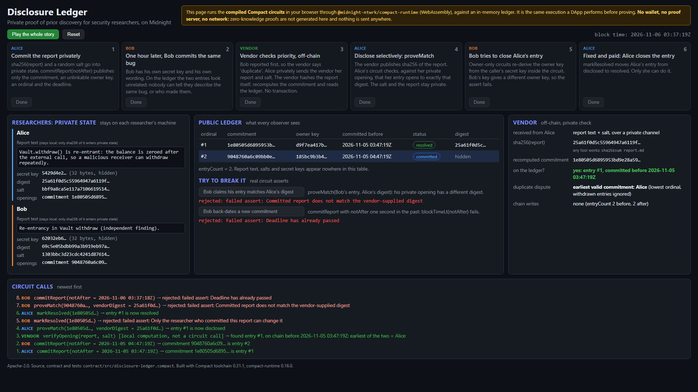

Private proof of prior discovery for security researchers
Compact contract4 zero-knowledge circuits Midnight dual public / private ledgerApache-2.0Bug-bounty programs pay the first reporter. When two researchers find the same bug, the later report is closed as a duplicate, and the researcher has no way to show they found it first.
Proving it today means publishing something: a dated post, a Git commit, a hash on a public chain. That leaks the bug, is self-asserted, or ties every finding to one identity.
commitReport(notAfter) publishes a commitment to sha256(report) with a random salt,
a per-entry owner key, a global ordinal and a deadline the network enforces.
Report, digest, salt and secret key stay in private state.
The researcher sends the vendor the report and salt. The vendor hashes it with any tool, recomputes the commitment and reads the entry: "on chain before T, entry #N".
No transaction. Nobody else learns the check happened.
proveMatch(commitment, vendorDigest) proves in zero knowledge that the entry opens to the digest
the vendor published. Then the owner can markResolved.
The salt and the report never touch the chain.
| Circuit | Who | Becomes public | Proved in zero knowledge |
|---|---|---|---|
commitReport(notAfter) | anyone | commitment, owner key, ordinal, notAfter |
block time < notAfter; commitment = persistentCommit(digest, salt) of the private draft; not already on the ledger |
proveMatch(c, vendorDigest) | owner | status disclosed, vendorDigest |
caller's secret key derives the entry's owner key; private opening matches the commitment; its digest equals vendorDigest |
markResolved(c) | owner | status resolved | ownership; entry is disclosed |
withdraw(c) | owner | status withdrawn | ownership; entry is committed |
Pure helpers reportCommitment and ownerKey are exported to TypeScript, so a vendor hashes exactly as the circuit does.
Witnesses: localSecretKey(), draftReport(), reportOpening(c).
| Data | Where |
|---|---|
| report text | researcher's disk only |
| salt (32 random bytes) | private state, or one vendor |
| secret key | private state |
| digest = sha256(report) | private until proveMatch |
| commitment | public: the anchor |
| owner key (per entry) | public, unlinkable |
ordinal, notAfter | public: provable priority |
blockTimeLt(notAfter): the ledger rejects a late commit.
Static page in ui/. Every button calls the compiled contract through
compact-runtime and its WebAssembly runtime.
Alice commits, Bob commits later, the vendor checks off-chain, Alice proves the match.
Three attacks are rejected by real circuit asserts. No wallet or proof server: proofs are not generated in the demo.
notAfter is an upper bound; inside one window the ordinal decides. A vendor must still judge whether two reports are the same bug.Deploy the contract; connect the web UI to the Lace wallet and a proof server through midnight-js, so every button sends a real proven transaction.
Prove the match to one vendor's public key without publishing the digest at all.
Prove "I own N resolved entries" without revealing or linking which ones.
A bounty platform checks the ledger before it marks a report as a duplicate.
AI-assisted build, disclosed. The contract, tests, web UI, this deck and the demo video were written with an AI coding assistant (Claude, by Anthropic) working in tidelit4's repository. Every result shown is produced by code in the repository and checked in CI.
Code: github.com/tidelit4/disclosure-ledger · Apache-2.0
Run it: npm ci --legacy-peer-deps && npm run compact && npm test && npm run ui:build && npm run ui:serve
Deck and demo video: docs/deck.pdf · docs/video/disclosure-ledger-demo.mp4
Built on Midnight. Contract structure, owner-key pattern and simulator approach follow midnightntwrk/example-bboard and example-counter (Apache-2.0).